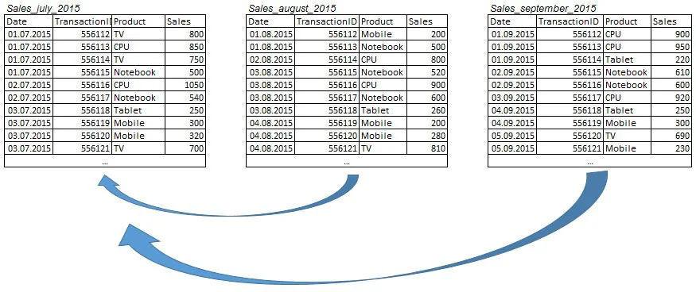

Как обрабатывать данные из множества таблиц в Google BigQuery.
В прошлой статье я рассказывал об оконных функциях в Google BigQuery. Сегодня рассмотрим функции подстановки таблиц. Здесь всё проще.;
Обычно в SQL для объединения данных из нескольких таблиц в одном запросе используют функцию UNION, но в справочнике доступных функций Google BigQuery вы ее не найдете. Чтобы обратиться в одном запросе одновременно к нескольким таблицам, достаточно перечислить их названия через запятую в пункте FROM. Например, у нас в базе есть 5 таблиц:
- Sales_june_2015;
- Sales_july_2015;
- Sales_august_2015;
- Sales_september_2015;
- Sales_october_2015.
Нам необходимо посчитать сумму продаж за третий квартал 2015 года. Информация о продажах в третьем квартале находится в таблицах Sales_july_2015, Sales_august_2015 и Sales_september_2015. Соответственно, нам надо перечислить названия этих таблиц в пункте FROM.
SELECT SUM(Sales) as sales
FROM Sales_july_2015, Sales_august_2015, Sales_september_2015

Таким образом, для BigQuery три таблицы при выполнении запроса будут равносильны одной целой таблице о продажах за третий квартал. Важно, чтобы таблицы, которые вы перечисляете через запятую, имели одинаковую структуру данных. Когда в вашем наборе данных всего пять таблиц, вполне можно обойтись описанным выше функционалом. Если же ваши таблицы разделены, например, по дням, то таких таблиц у вас со временем будет сотни, а через пару лет — тысячи. И каждый раз перечислять их через запятую вручную будет уже не так просто. Функции подстановки таблиц (Table wildcard functions) работают по такому же принципу. Используя их, достаточно обозначить диапазон таблиц вместо перечисления всех таблиц через запятую. Рассмотрим три доступные в Google BigQuery функции подстановки таблиц с примерами их использования.
1. Функция TABLE_DATE_RANGE (префикс, начальная дата, конечная дата)
Функция дает возможность обратиться к ряду таблиц, разделенных по дням, задав диапазон дат. Для названия таблицы, в которой описывается, как использовать данную функцию, нужно использовать формат префикс/дата, при этом дата должна быть записана в формате ГГГГММДД. При определении начальной и конечной даты вы можете использовать функции даты и времени, например:
TIMESTAMP('2012-10-01 02:03:04')
DATE_ADD(CURRENT_TIMESTAMP(), -7, 'DAY')
Предположим, что в нашем наборе данных есть три таблицы:
- mydata.people20140325;
- mydata.people20140326;
- mydata.people20140327.
Для того, чтобы запрос обратился ко всем трем таблицам, необходимо в качестве начальной даты указать TIMESTAMP(‘2014-03-25’), а в качестве финальной — TIMESTAMP(‘2014-03-27’). Запрос:
SELECT
name
FROM
TABLE_DATE_RANGE(mydata.people,
TIMESTAMP('2014-03-25'),
TIMESTAMP('2014-03-27'))
WHERE
age >= 35
Таким образом, в качестве префикса мы указали mydata.people, в качестве начальной даты 2014-03-25, а в качестве конечной — 2014-03-27. Пример обращения к таблицам за 2 предыдущих дня. Предположим, что в проекте myproject-1234 есть следующие таблицы:
- mydata.people20140323;
- mydata.people20140324;
- mydata.people20140325.
Предположим, что сегодня 25 марта 2014 года. Запрос:
SELECT
name
FROM
(TABLE_DATE_RANGE([myproject-1234:mydata.people],
DATE_ADD(CURRENT_TIMESTAMP(), -2, 'DAY'),
CURRENT_TIMESTAMP()))
WHERE
age >= 35
В данном примере в качестве начальной даты мы использовали функцию DATE_ADD и указали в качестве точки отсчета текущее время, а также задали параметр отставания в 2 дня. В качестве финальной даты мы указали функцию CURRENT_TIMESTAMP, которая возвращает текущую дату и время. Соответственно, финальной датой будет текущий день.
2. Функция TABLE_DATE_RANGE_STRICT (префикс, начальная дата, конечная дата)
Данная функция является эквивалентом TABLE_DATE_RANGE, разница между ними в том, что если в списке таблиц, разбитых по дням, будет отсутствовать таблица хотя бы за одну дату из указанного диапазона, функция TABLE_DATE_RANGE_STRIC вернет ошибку, и сообщение «Таблица (имя таблицы) ошибка». Пример ситуации, в которой функция TABLE_DATE_RANGE_STRICT вернет ошибку (подразумевает наличие в вашем наборе данных следующих таблиц):
- people20140325;
- people20140327.
Запрос:
SELECT
name
FROM
(TABLE_DATE_RANGE_STRICT(people,
TIMESTAMP('2014-03-25'),
TIMESTAMP('2014-03-27')))
WHERE age >= 35
В качестве начальной даты мы задали 2014-03-25, в качестве финальной — 2014-03-25. Запрос в данном случае вернет ошибку «Не найдена таблица people20140326», поскольку ее нет в нашем наборе данных.
3. Функция TABLE_QUERY (набор данных, выражение)
С помощью данной функции вы можете обратиться к таблицам, названия которых соответствуют заданному выражению. Параметр «Выражение» обязательно должен быть в строчном виде. В качестве выражения можно использовать строчные функции, такие как CONTAINS или REGEXP_MATCH. Пример запроса, обращающегося к таблицам с названиями, содержащими «oo» и четыре и более символов (подразумевает присутствие в наборе таблиц со следующими названиями):
- mydata.boo;
- mydata.fork;
- mydata.ooze;
- mydata.spoon.
Запрос:
SELECT
speed
FROM (TABLE_QUERY(mydata,
'table_id CONTAINS "oo" AND length(table_id) >= 4'))
Запрос обработает данные из таблиц mydata.ooze и mydata.spoon, так как именно эти две таблицы соответсвуют заданному в функции TABLE_QUERY выражению. Пример обращения к таблицам с названиями, соответствующими определенному регулярному выражению. В данном случае название таблицы должно начинаться на «boo» и содержать 3-5 цифр:
- mydata.book4;
- mydata.book418;
- mydata.boom12345;
- mydata.boom123456789;
- mydata.taboo999.
Запрос:
SELECT
speed
FROM
TABLE_QUERY([myproject-1234:mydata],
'REGEXP_MATCH(table_id, r"^boo[d]{3,5}")')
Поскольку названия этих таблиц соответствуют регулярному выражению, которое мы использовали в запросе «^boo[\d]{3,5}», будут обрабатываться данные из таблиц:
- mydata.book418;
- mydata.boom12345.
Как видите, обрабатывать данные с помощью функций подстановки таблиц в Google BigQuery значительно более удобно, чем в классическом SQL. Пользуйтесь с удовольствием.